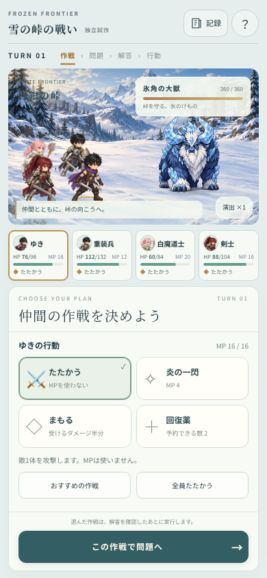
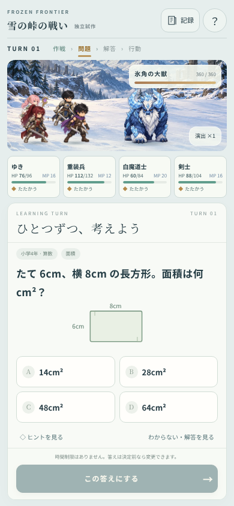
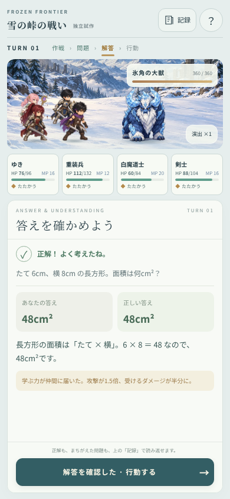
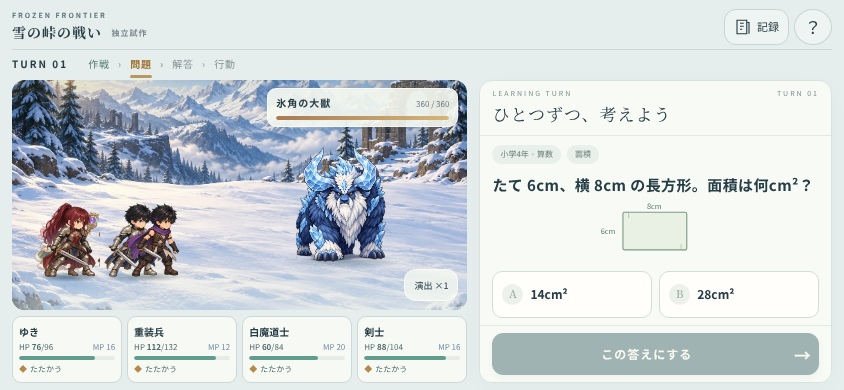

FROZEN FRONTIER / BATTLE PROTOTYPE雪の峠の戦い
雪山の静止画を生かした、スマホ向けコマンドバトル。仲間の作戦を予約し、毎ターン問題と解答を確認してから行動します。フィールド試作とは別のページ・別の状態で評価できます。
読む時間と、戦う時間を分ける
問題・解答画面は自動で進みません。正誤や「わからない」にかかわらず、正解と解説を表示します。敵を倒すターンでも、確認前に攻撃しません。

1. 作戦を予約
2. 問題に答える
3. 解答を確認して行動横持ちは戦場と操作を左右に

評価のポイント
- 少ないタップで作戦を変更できるか。回復対象とMP消費を判断できるか。
- 問題・正解・説明が読みやすく、決定ボタンまで迷わず届くか。
- 雪の背景と短い行動演出で、軽さと雰囲気が両立するか。
320×568からPCまでの模擬画面検証、必須の問題・解答遷移、勝敗、資源消費、停止・復帰を確認済み。実機iOS／Androidでの速度と文字拡大は未検証です。試験用の算数12問・固定戦闘で、本編の保存データに影響しません。